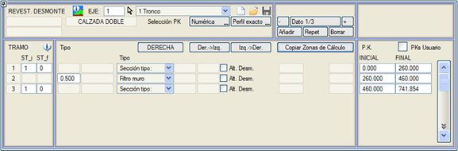
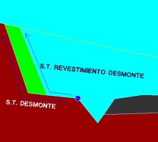
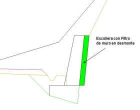
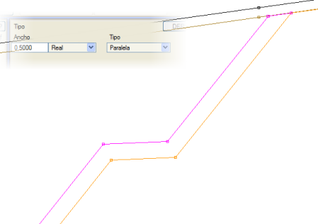
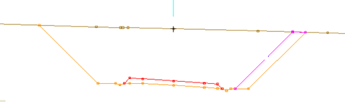
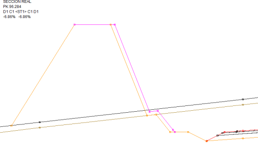
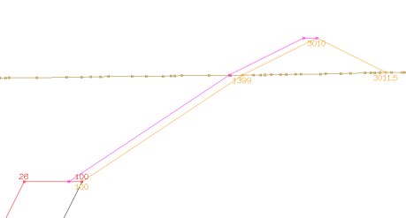
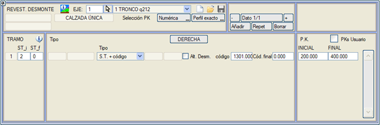

| |
|
YARMA KAPLAMASI
|
ISTRAM®/ISPOL®, yarma kaplamalarını çeşitli varyantlarda tanımlamaya olanak tanır, geometriye ek olarak ilgili metrajları da oluşturur ve [SAĞ / SOL] tarafta farklı geometriye sahip BAŞLANGIÇ KM'si ve BİTİŞ KM'si ile farklı kesimler tanımlanabilir. 
Yarma kaplaması verileri .vol dosyasında saklanır, ancak [Kaydet]  ve [Yükle] ve [Yükle]  düğmeleri aracılığıyla .tr3 uzantılı dosyalarda da arşivlenebilir veya bu dosyalardan geri yüklenebilir. düğmeleri aracılığıyla .tr3 uzantılı dosyalarda da arşivlenebilir veya bu dosyalardan geri yüklenebilir.Hesap Bölgeleri menüsündeki kesimleri Hesap Bölgelerini Kopyala düğmesinden kopyalamak mümkündür, ayrıca verileri sağdan sola Sağ->Sol veya tam tersi Sol->Sağ kopyalama imkanı da sunar. Kullanıcı KM'leri seçeneği, KM'lerin kullanıcı değerleriyle girilmesine olanak tanır. Bu seçenek etkinleştirilebilir/devre dışı bırakılabilir ve aktivasyon durumu .vol dosyasında saklanır. Yarma Yük. kutucuğu etkinleştirilerek, bir maksimum ve bir minimum yükseklik tanımlayarak kaplamanın uygulanması yarma yüksekliğine göre kontrol edilebilir. Program, yarma kaplamasını uygulamak için farklı olasılıkları ayırt eder:
Tip kesitlere göre Kaplama için kullanılan tip kesitler, yarma kesiti geometrisinin hesap bölgelerinde kullanılandan farklı olması ve bu geometriyi tanımlayan çizginin, hendek sonundan uygulandığında hesap bölgelerininkinin içinde kalması gerekir. Kaplamanın dış yüzü, bir başlangıç ve bitiş tip kesitinin yarma geometrisi kullanılarak tanımlanır. Eğer bitiş tip kesiti olarak 0 bildirilirse, geometri tüm kesim boyunca sabittir, aksi takdirde başlangıç ve bitiş tip kesiti arasında bir geçiş yapılır. Duvar arkası filtresi Bu menüden bir duvar filtresi de tanımlanabilir. Bu durumda, bir genişlik değeri belirtilerek tanımlanır. Duvar filtresinin metrajı YARMA_KAPLAMA olarak görünür. Eğer yarma kesiti bir duvarla başlıyorsa, yarma kaplaması kesitinin çizgisi 1290 koduna, yani duvarın iç yüzünün üst noktasına bağlanır. Paralel Kaplama, yatay, dik veya kesite gerçek olarak ölçülebilen belirli bir mesafeye göre paraleldir. Gerçek paralel, palyelerin şevlerle aynı kalınlıkta kaplandığı durumlarda kullanılır. Dik veya gerçek mesafe arasındaki fark, ekteki şekilde gördüğümüz gibi palyeli şevlerde fark edilebilir. Dik veya gerçek mesafe, daha sonra göreceğimiz Paralel veya Paralel toprak kaplama durumlarında kullanılabilir. 
Gerçek Mesafede Yarma Kaplaması  Dik Mesafede Yarma Kaplaması
Kaplamanın başlangıcının dayanması için yarma kesitine bir palye ile başlamak veya bir görüş palyesi kullanmak ya da hendeği yarı yatay bir segmentle bitirmek tavsiye edilir. 
Paralel kaplama türleri için, kaplama belirli bir koda kadar yapılabilir. Hatta yarmanın sonunda bir **toprak set** varsa, arazinin üzerinden onun üzerine çıkabilir. Eğer bitiş kodu sıfır bırakılırsa, kaplama araziye kadar devam eder.  
100 kodundan (kırmızı kot-terasman kesişimi) başlayan yarma kaplamaları için, program kaplamayı kırmızı kot çizgisinin (L67) son segmentine dayandırmaya çalışır. 
Tip Kesit artı kod Kaplamanın tip kesitini, 68 nolu yüzeyin belirtilen kodundan başlatır. 
Paralel TOPRAK Paralel gibidir, ancak kaya yarmasını kaplamaz. Paralel kod Bir koddan paralel bir kaplama tanımlamayı sağlar. Bu seçenek, bir dolgu kesitinde bir kafa hendeğinin yarma tarafındaki dış bölgesini kaplama imkanı sunar. Yarma Kaplaması menüsü içinde, aynı KM'lerde birkaç veri satırı tanımlama imkanı vardır. Program, sondan başlayarak öngörülen koşulları sağlayan ilkini kullanacaktır. |